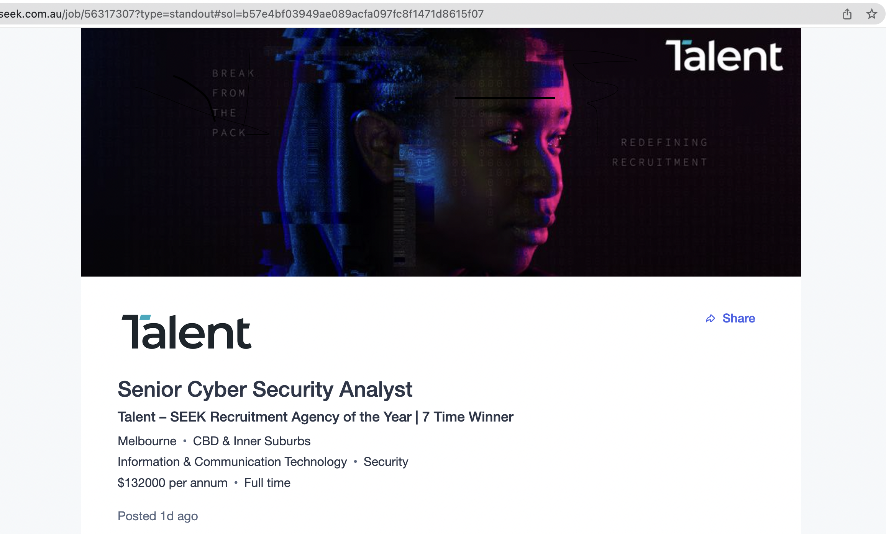

Hi, my name is Pratham Shah and I am studying at Rmit university, city campus this year, and my student id and email is s3943888 and s3943888@student.rmit.edu.au. I was born in India, Rajkot in 2003 and my family moved to Australia in 2007 as my parents wanted a better lifestyle for my sister and I, who is only a year younger than me. I was born in the state of Gujarat therefore my first language is Gujarati and my second language is English, my nationality is Hinduism and my culture goes back to 1000 years, and currently Gujarati is spoken by more than 60 million people world wide. In my culture we celebrate lots of festivals, a popular festival of India that is known all around the world is Deepawali which is basically the festival of light where you light small candles all around your home and have bright lights everywhere which symbolises god coming into your life and all the darkness going away. A few facts about me include my interest in physical activity like playing basketball, swimming and working out. I also workout at the gym and it has been 2 years since I started at Anytime Fitness and I’ve been loving it, in my free time I like to play call of duty, nba and chess.
My interest in i.t comes from the fact that I’m always going to be heavily surrounded by all types of technology as it is also continuously changing all around the world, and I won’t have to worry about there being any shortage of roles for this job as the world is technology reliant it wouldn’t be difficult to find a secure job. Another reason for my interest in Information Technology is that once I get a job in the I.T career I’ll be bound to meet all kinds of different people along the way who may have the same interests as me and working with them would help me stay attached to I.T.
My interest in I.T first began when I was in year 10, due to choosing my own elective I had chosen I.T for the first time without having any prior knowledge or experience of the subject, turns out I really started to enjoy this subject and the concept of programming and creating websites using programs like visual studio basics, and pycharm. The only reason I had begun to enjoy I.T in the first place is because my teacher for the subject and I got along and he was incredible in the way he taught us; due to the teacher’s friendly nature and down to earth personality it made the class very enjoyable for everyone, and I ended up loving something I had just started to learn. Coincidentally for the next two years of school I had the same teacher and it really kept me hooked to the subject as I would always enter the classroom with excitement, and this is the person who sparked the interest of I.T me, and from then onwards I became very passionate about it.
I decided to come to RMIT as my first preference over other universities, because I preferred a place where I could go for a great experience for the desired course and there was no place better than going to RMIT for Information Technology because RMIT has a 5-star ranking for excellence in higher education and 96% of graduates found a full-time job within one year of graduation, according to (Why Choose RMIT n.d.) furthermore there are amongst the “top 10 universities in Australia for studies in information technology” referencing to (University n.d.) At the end of my studies at Rmit university I expect to learn all the fundamentals of Information Technology and all the concepts with a great understanding that would help me in developing my skills in this field, which will result in me finding a job because of my knowledge acquired from Rmit. I also expect to learn all my subjects like intro to programming and intro to info tech to the best knowledge as I can with the help of my teachers.
An ideal job for me in the I.T field which interests me would be a senior cybersecurity analyst. A senior cybersecurity analyst is a person with many years of experience within the workforce who has acquired all the knowledge within the company to hold this senior position and being able to manage an entire company’s security system from cyber-attacks and anything that can harm the companies network systems from the outside. The senior analyst also must direct the employees in safeguarding the entire companies’ organisation from any potential breaches coming from anywhere and becoming the employee’s leader in these threatful situations. This position has intrigued me because this role requires a person to have enough potential to organise a company and creating a company’s security system to prevent breaches while managing it in their own unique ways. Another point that has grabbed my attention is its massive pay scale which ranges anywhere from 120-140 thousand dollars per annum. My Job

This job requires enough knowledge that can take up to at least 1-3 years to acquire and to being able to qualify for this job it demands experience and skills in using security tools like firewall (which is a network security device that monitors incoming and outgoing network traffic), demonstrating experience in network security (protects your network and data), expertise in using python by heart (a scripting language), malware hunting and threat hunting experience (malware is a threat). These skills and the experience listed is critical for this job. Lastly, the only qualifications you need is a bachelor’s degree which doesn’t clearly state in the site but it is very mandatory and a certification in information systems security professional which is crucial (CISSP).
The current skills that I have is understanding how to use scripting languages and programs like visual studio basics, python and pycharm. Currently I have no certified qualifications regarding Information Technology or anything in the I.T field but I do have prior experience in creating a program that enables teachers to use the software to store student names, grades ect... and it saves each user's data using their id and password that the user creates themselves.
To be eligible for this role I will find employment where I can expertise in the skills listed above by working towards expertizing on software that supports python like pycharm and atom. I will learn to create firewalls to stop other entities from getting into a user's system by first initiating it by reading through websites like Fire-Wall Security and then learning from experts in small companies to further develop my skills and experience. Additionally, I will learn malware hunting techniques from teachers, software companies and online websites like Threat Hunting Tactics. Lastly, to be eligible for the qualifications needed for this job I will finish my bachelor’s degree and to my best ability prepare to work on being ready for the (CISSP) certificate test by watching YouTube videos, reading articles and reading books like “CISSP: Certified Information Systems Security Professional Study Guide” by Mike Chapple, James Michael Stewart and Ed Tittel. By watching videos, reading books and reading articles, it will broaden my understanding which will benefit my chance of getting a future job like this.
My personality type is an “Entertainer” and my ‘role’ is considered an explorer and my ‘strategy’ is people mastery. My traits are:
I am a tactile learner which means I learn by touching and doing things, I understand and remember things through physical movement.
Results:
This ability to see gives you the confidence to take big risks. To gain the confidence and participation of others, you turn up the charm. My Traits are:
The results of the learning style test and the personality test means that the results that came from both tests could be a list of things I should be working on for future employment where the employer may need a leadership position with those traits listed above and if so, I would then easily be able adjust to the job as I already have those traits required for that role.
These results given from the test may reflect who I may be or may act as in a team. In a team for example the traits given from the leadership test like ‘communicative, tolerance of risk’ and ‘simplicity’ are the traits I would demonstrate into real life applications in a team.
When forming a team as a leader I would ensure that my abilities are at its peak as I would need to communicate with all the team members and be ready to take upon risks and being able to solve them with simplicity and strategic thinking in a tactile manner.
In my opinion the legitimacy of all 3 of the tests were pretty accurate but it could have been more reliant based on the feedback I received as I don’t agree with the traits of lacking in conflict resolution. The 2nd was very on point as I do like to do tasks in a tactile way and lastly the 1st text was 100% on point as I am a very extraverted person and love to socialise. In conclusion all 3 of the tests were mostly on point and these have and will help me in the future.
The project will be to create a fitness app for all the fitness freaks and everyday people who want to learn how to exercise for their health’s benefit. This app will essentially motivate people into exercising and starting to work out whether at a nearby gym or even at home, because this app will give users no excuses for not wanting to exercise as motivating people is its main goal. This app will provide its users with detailed explanations of their selected exercise whilst providing pictures on how to do those exercises. In the app users won’t just be able to look at exercises but also will be able to self-educate themselves via our app's help.
This app will be interesting in a very useful and informative way as ‘more than 55%’ of 18-66 year old’s in Australian don’t meet the guidelines set out by the Australian Institute of Health and Welfare (Australian Government Department of Health 2021), so this app will help to push individuals who can’t meet those guidelines of exercising daily. In 2015 ‘2018 Victorians’ were surveyed and 51% of them lacked the motivation to exercise which pulled them back from staying fit (ABC News 2015). As this app is going to be free and provide all the information about exercising and diet so it’ll give no reason for users to not workout. To even help users stay motivated for long periods of time the application will send out daily reminders within the app of the users to exercise and eat healthy which will promote healthy eating and healthy lifestyle
The application is going to have basic needs and fundamentals for everyday customers. When a user downloads the application, they will have the home page on their screen with options like: workouts, food recommendations, milestones and goals, nutrition’s facts and reminders. Once a user clicks on the workouts button it’ll take them into the next page where user picks exercises they prefer between beginner level, intermediate or even professional, then once selected user picks between different muscle groups they choose to work on like biceps, shoulders, quads, glutes, trapezius, lats or core, and from whichever option selection the app will take them to a new page of their chosen muscle group where there will be detailed explanations on teaching users how to do those exercises with basic pictures and videos.
Another feature in the app is the food recommendations, where users can have a look at the types of beneficial foods available that they can easily make in their own homes. These options will have foods targeting all types of people from vegan to vegetarians or even meat lovers. These food options will be categorised from the least to the most amount of calorie intake. This will assist users who are conscious on what to eat as our service in this matter will have a huge range of foods prelisted within the app so users can access it anytime. This would not only motivate people into working out but also promote healthy food options for healthy lifestyle.
Additionally in the app you also have a goal section where you can type In your goal when you first download the application and can change it whenever you like and your goal will stay there until you think you’ve achieved it and when you do then you can store that In our ‘milestones’ section in the app where it’ll show all your past goals that you’ve achieved so you can look back at them whenever you want and feel proud from all the hard work you’ve come from and what you will achieve in the future.
There will also be a ‘nutrition knowledge’ section in the menus of the app, this is initially where users can go to learn about important factors like, protein, carbohydrates, fats, calories, saturated fats, drinks like protein shakes, pre-workout and even during workout hydration drinks. This section will be a feature where users who are just starting to work out or people who are just wanting to learn about nutrition can come through to easily access these information because it’ll be right in the menu Infront of all users.
If that’s not enough then there’s also a reminders section where the user can type in anything they want to be reminded on, like eat a heavy calorie meal at 3pm, drink water every 30 minutes for hydration and exercise at 5pm for 3 hours, take then when a user comes back, they can see what they have left to do. This feature is practically like an open note where they can type whatever you want within the app.
To create the application the hardware must be somewhat durable to accept complicated tasks like complex coding, software designing and high-quality web page development. All the software should be up to date to reach expected results for the application quickly. Some examples of software’s to create aspects of the fitness application can be used through appgyver, appcode, buildfire or coderunner which can be easily accessible and can be used at a very low-cost which ensures it’s efficiently. The tools required can be durable computers and laptops, practically any type of technology that can compute its user’s commands and meet successful results.
The skills required for the fitness application are very basic and reasonable as you need to know how to code and design the fitness application. These skills can be used through coding languages like java script and python, you would also need to know how to code in other languages like Hyper Text Markup Language (Html) and Cascade styling sheets (CSS) as these both are very crucial skills for designing a fitness application. Some Software’s that you can use for these languages are Django and pyramid because through these frameworks you can make an application, and existing application like Instagram runs directly on Django’s frameworks and is written completely in python. The feasibility to find these skills are very easy as learning python for someone who doesn’t already know how to use it can be very basic to learn. To find software’s that can help you create your app is also very simple due to there being so many new software’s out there for app development, finding one that can help won’t be too difficult.
If this fitness app’s project is completely successful, I would hope the outcome would be beyond expectations as the result after developing and creating the app would be to launch the app on different platforms for users. The original problem being that majority of the people want to exercise to stay fit but can be bothered to work out because they lack the motivation and knowledge to exercise, to solve this problem the app would be useful as it will motivate people to exercise. The impact that this development will have is that if this app becomes a successful then it’ll help individuals to keep their health up to date and stay physically fit.